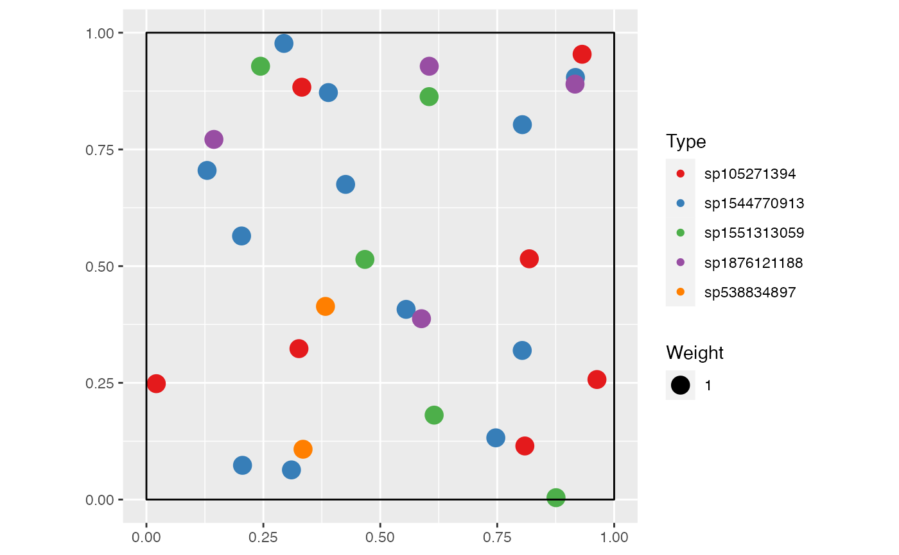

This function extends rCommunity by spatializing the randomized community.
rSpCommunity(n, size = sum(NorP), NorP = 1, BootstrapMethod = "Chao2015", S = 300, Distribution = "lnorm", sd = 1, prob = 0.1, alpha = 40, Spatial = "Binomial", win = spatstat::owin(), Species = NULL, Sizes = "Uniform", CheckArguments = TRUE)
| n | The number of communities to draw. |
|---|---|
| size | The number of individuals to draw in each community. |
| NorP | A numeric vector or a two-column matrix. Contains either abundances or probabilities. Two-column matrices should contain the observed abundances (or probabilities) in the first column and the expected ones in the second column, to allow using beta diversity functions. |
| BootstrapMethod | The method used to obtain the probabilities to generate bootstrapped communities from observed abundances. If |
| S | The number of species. |
| Distribution | The distribution of species frequencies. May be |
| sd | The simulated distribution standard deviation. For the log-normal distribution, this is the standard deviation on the log scale. |
| prob | The probability of success in each trial. |
| alpha | Fisher's alpha. |
| Spatial | TODO |
| win | The window containing the point pattern. It is an |
| Species | A vector of characters or of factors containing the possible species. |
| Sizes | TODO |
| CheckArguments | If |
An object of class "wmppp" (wmppp.object), with PointType values as species names if n=1.
An object of class "SpCommunities", which is a list of wmppp.objects, is returned if n>1.
Chao A, Jost L (2015).
“Estimating diversity and entropy profiles via discovery rates of new species.”
Methods in Ecology and Evolution, 6(8), 873-882.
Chao A, Wang YT, Jost L (2013).
“Entropy and the Species Accumulation Curve: a Novel Entropy Estimator Via Discovery Rates of New Species.”
Methods in Ecology and Evolution, 4(11), 1091-1100.
Marcon E, Herault B, Baraloto C, Lang G (2012).
“The Decomposition of Shannon's Entropy and a Confidence Interval for Beta Diversity.”
Oikos, 121(4), 516--522.
doi: 10.1111/j.1600-0706.2011.19267.x
.
